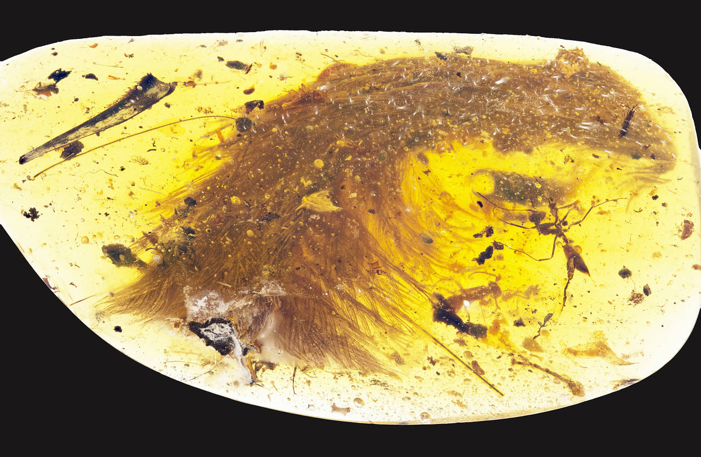

The Feathered Dinosaur
Earlier this week, an incredible discovery was made: a dinosaur feather preserved in amber, the first ever to be found. Do you remember the mosquito they had found in "Jurassic Park"? It's the same in terms of importance. We may not bring dinosaurs back to life, but we sure can learn more about them.
How do you think dinosaurs would have looked like covered in feathers? Scientists have been saying for years that the DNA of a T-Rex resembles that of a chicken more than that of a lizard or a Komodo dragon. Can you imagine Jurassic Park having giant carnivorous bird-like animals instead of the scary dinosaurs we know and love?
Read more about this incredible discovery, that may change how we view the world, right HERE.